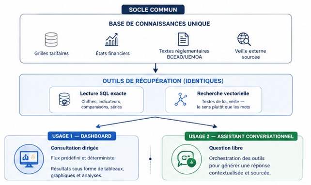
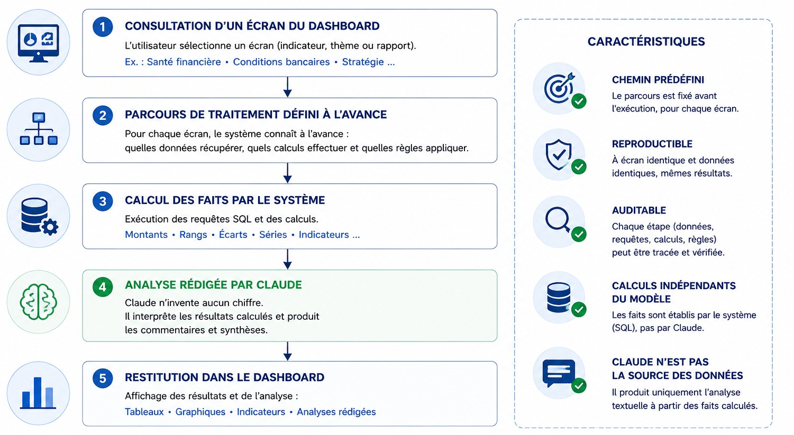
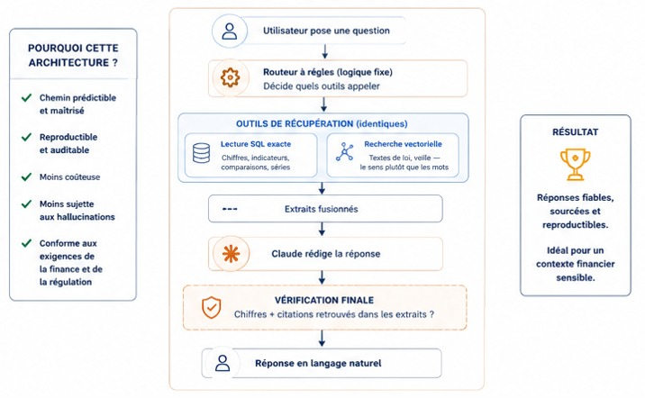
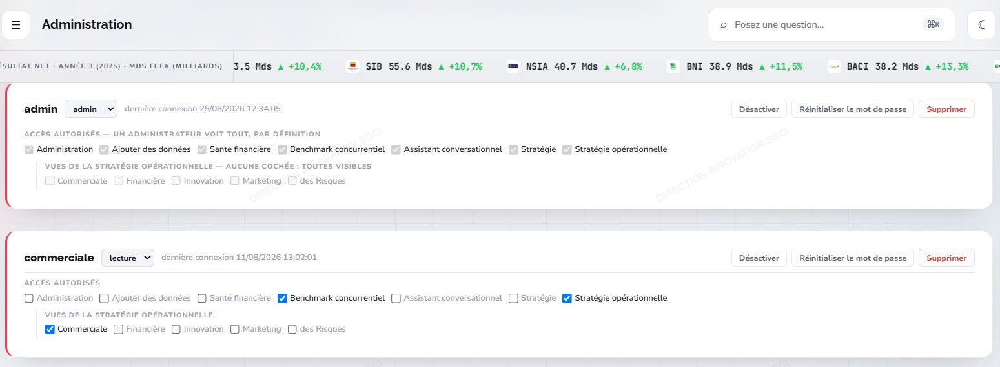
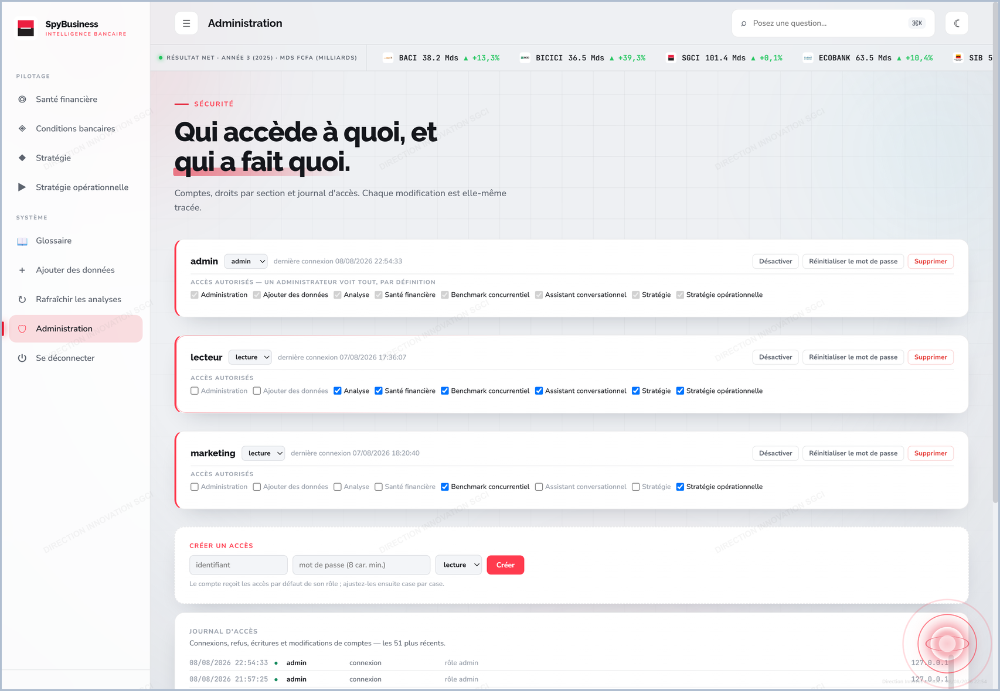
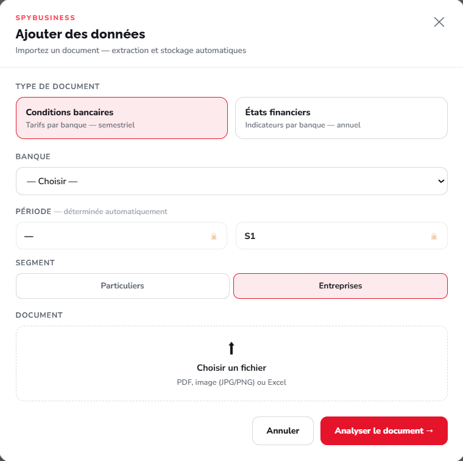
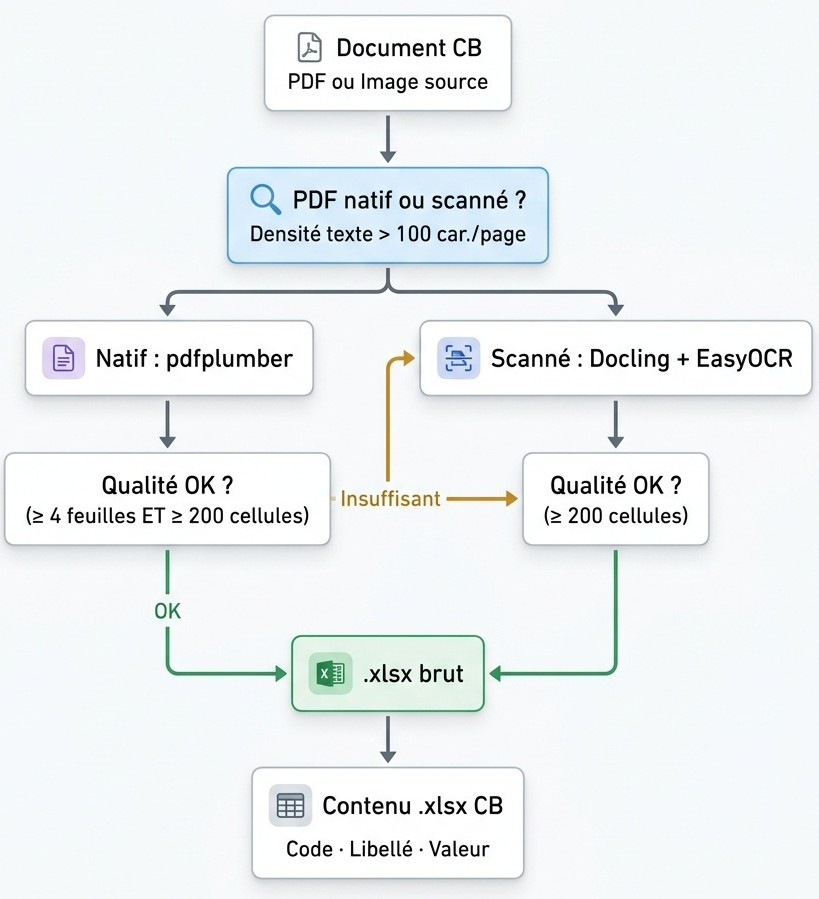
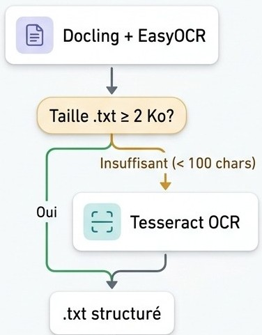

1. Le principe qui gouverne tout le code
À lire avant toute modification. Une proposition qui contredit ce principe est à refuser, quelle que soit sa commodité.
Aucun chiffre affiché par l'application ne vient d'un modèle de langage. Les montants, les rangs, les écarts et les médianes sont calculés en SQL. Le modèle ne fait que rédiger autour de faits qu'on lui impose.
Ce que l'application compare : la SGCI face à six concurrents — BACI, BICICI, BNI, ECOBANK, NSIA, SIB — sur trois matières publiques.
| Matière | Périodicité | Table |
|---|---|---|
| Grilles tarifaires | semestrielle | cb_tarifs |
| États financiers | annuelle | ef_indicateurs |
| Textes réglementaires BCEAO / UEMOA | au fil des publications | regl_documents |
Cinq écrans : Santé financière, Conditions bancaires, Stratégie, Stratégie opérationnelle et Assistant conversationnel.
Desktop/MEMOIRE_LATEX. Cette documentation ne dépend pas du mémoire et n'a
pas à être tenue à jour avec lui.
2. Architecture
Le tableau de bord et l'assistant reposent sur la même base et les mêmes outils de récupération. Ce qui les distingue est la façon dont le traitement à exécuter est déterminé.

Le tableau de bord : un chemin déterminé par le contexte
L'écran consulté définit déjà la nature de l'information attendue. Le système sait quel traitement exécuter sans demander au modèle de choisir un outil.
écran → traitement → récupération → calcul → restitution
L'assistant : un chemin à déterminer
Une même zone de saisie peut recevoir une question financière, tarifaire, réglementaire ou une demande de synthèse. Le problème n'est plus seulement de récupérer l'information, mais de déterminer quelle récupération effectuer. L'application retient l'orchestration modulaire : un routeur à règles, sans modèle de langage.

3. Carte du code
Où se trouve quoi, et ce qu'il faut savoir avant d'y toucher.
BACK/
├── SGCI Strategic Intelligence — Design System/spybusiness/
│ ├── server.py Flask — toutes les routes /api/* (~7 800 lignes)
│ ├── app.html coquille HTML
│ ├── app.main.js toute l'interface (~10 000 lignes)
│ ├── app.data.js libellés, palettes, constantes d'affichage
│ ├── assets/logos/ logos des banques, un fichier par code
│ ├── cache/ analyses rédigées, versionnées par clé
│ └── dash_app/
│ ├── db.py TOUT le SQL (~3 300 lignes)
│ ├── securite.py comptes, rôles, droits, journal
│ ├── directives.py les 20 directives opérationnelles
│ ├── strategie_operationnelle.py dossiers sectoriels
│ └── redaction_secours.py rédaction sans modèle, si quota épuisé
├── RAG/
│ ├── chain.py orchestration de l'assistant, appels au modèle
│ ├── retriever.py routage, filtres, recherche vectorielle et lexicale
│ ├── config.py seuils, plafonds, listes de mots-clés
│ ├── agent_tools.py outils exposés à l'orchestration
│ └── structured_tools.py lectures chiffrées garanties par SQL
├── PIPELINE/ extraction PDF → base — NON déployé
│ ├── ingest.py point d'entrée en ligne de commande
│ └── EXTRACTION/ NETTOYAGE/ STOCKAGE_BD/ VECTORISATION/
├── DATA/SOURCE/ plaquettes et états financiers d'origine
├── wsgi.py point d'entrée de production
├── build.py installation des dépendances à la construction
├── render.yaml description du service, lue par le Blueprint
└── migrer_vers_supabase.py transport de la base vers l'hébergeur« SGCI Strategic Intelligence — Design System ». Ne jamais en dépendre dans une ligne
de commande : pip a réellement échoué dessus, coupant le chemin au premier
espace et cherchant un fichier nommé « SGCI ». wsgi.py et
build.py résolvent le chemin en Python, et le cherchent plutôt que
de l'écrire en dur. Toute nouvelle commande doit faire de même.
Faire tourner en local
# PostgreSQL « intelligence_bancaire » + extensions pgvector et pg_trgm
cd "SGCI Strategic Intelligence — Design System/spybusiness"
python server.py
# → http://localhost:5000Les secrets vivent dans BACK/.env, exclu de git. Voir la
section Changer une clé pour la liste complète.
4. Base de données
PostgreSQL, avec les extensions pgvector (recherche par
similarité) et pg_trgm (rapprochement de libellés). En local :
intelligence_bancaire. En production : Supabase.
Tables principales
| Table | Contenu |
|---|---|
banques | le référentiel ; toute nouvelle banque commence ici, les autres tables y font clé étrangère |
cb_tarifs | lignes des grilles tarifaires, par banque, période, segment, section et sous-section |
ef_indicateurs | indicateurs des états financiers, par banque et exercice |
regl_documents | textes réglementaires découpés par article, avec leur vecteur |
cache_app | résultats coûteux, en base et non en mémoire : ils survivent aux réveils du service et aux redéploiements |
C'est la source de presque tous les bugs silencieux de ce projet. Une requête invalide, un chemin mort ou une extension manquante donnent un écran vide, sans le moindre message. Cinq chemins morts ont ainsi ignoré 1 240 validations sourcées pendant des semaines.
Devant un écran vide, toujours vérifier que la requête
passe avant de soupçonner les données. À l'inverse, db.execute()
propage les erreurs : c'est voulu, une écriture qui échoue doit se voir.
Un DISTINCT ON sans départage complet rendait des
résultats différents sur deux copies identiques de la base : un simple
VACUUM déplaçait les chiffres. Corrigé en ajoutant o.libelle, o.id,
s.id à l'ordonnancement. Tout nouveau DISTINCT ON est soumis à la
même règle.
5. L'assistant conversationnel
Une question posée traverse un routeur à règles, puis un ou plusieurs outils de récupération, avant qu'une seule rédaction ne soit demandée au modèle.
Le routage, sans modèle
retriever.detect_types_doc(question) met la question en minuscules et y
cherche des mots-clés en début de mot. Ni appel de modèle, ni vecteur :
le routage ne coûte rien.
La récupération
Une fois le domaine choisi, l'outil décide comment lire :
- si la question désigne déjà une banque et un exercice précis, les lignes correspondantes sont lues directement en SQL — rien n'est classé ;
- sinon la question est vectorisée (768 dimensions) et comparée aux fragments par
similarité cosinus, avec un seuil de
0,30; - sur les textes réglementaires uniquement, une seconde recherche par les mots exacts est menée en parallèle, et les deux classements sont fusionnés — le vocabulaire juridique est trop précis pour le seul vecteur.
Un plafond global limite le volume remis au modèle. Au-delà, la réduction est déterministe et garantit qu'aucune banque ne disparaît de la comparaison.
Les garde-fous anti-invention
Un modèle privé de la valeur exacte ne se tait pas : il produit la suite la plus
plausible. Deux garde-fous, de même mécanisme, sont posés dans RAG/chain.py.
| Garde-fou | Ce qu'il attrape |
|---|---|
| Chiffres | un montant présent dans la réponse mais absent du contexte fourni |
| Citations | une référence — article, instruction, décision, circulaire, règlement, directive, loi — absente du contexte. Déclenché en production : le modèle avait fabriqué une « Circulaire BCEAO n° 2018/05 » qui n'existe dans aucun document du corpus. |
Politique commune : on retente une fois, on ne bloque jamais dur, et l'on journalise si cela persiste plutôt que de rendre une réponse vide.
6. Sécurité et comptes
Une porte unique
Toutes les requêtes passent par @app.before_request _controle_acces().
Aucune route /api/* ne répond sans session valide. Le contrôle est
centralisé : ajouter une route ne crée pas de trou, elle est protégée d'office.
Des droits par section, pas seulement par rôle
L'administrateur coche, compte par compte, les sections visibles. Le rôle
admin constitue un second verrou sur
/api/admin/* : une case cochée par erreur ne suffit pas à ouvrir
l'administration.
Mots de passe et blocage
- hachage scrypt avec sel, via
werkzeug.security— le mot de passe n'est jamais stocké en clair ; - blocage de cinq minutes après cinq échecs ;
- sans compte créé par l'administrateur, aucun accès — il n'existe pas de mode invité.


7. Déploiement
Un seul service web sur Render, une base sur Supabase. La branche
déployée est main : tout ce qui y est poussé part en production.
| Élément | Où | Pourquoi |
|---|---|---|
| Application | Render, plan gratuit, région Frankfurt | la plus proche d'Abidjan parmi les régions offertes |
| Base de données | Supabase | l'offre gratuite de Render supprime la base au bout de trente jours |
| Rédaction des analyses | Gemini, Groq en relais | appels d'API, aucun modèle local |
| Vecteur de la question | API Hugging Face | évite d'embarquer 1,9 Go de modèle |
Comment se fait une mise en production
git add <les fichiers modifiés>
git commit -m "…"
git push origin main # Render reconstruit et redéploie tout seulLa construction exécute python build.py, le démarrage
gunicorn wsgi:app depuis la racine.
Les caches applicatifs sont en mémoire. Deux workers
tiendraient deux caches divergents, dont l'un servirait des chiffres différents de
l'autre selon la requête tirée. Les fils d'exécution (--threads 8)
suffisent : les requêtes attendent la base et les API, pas le processeur.
Détails de configuration à ne pas défaire
--timeout 180: le préchauffage reconstruit les analyses au premier démarrage ; la valeur par défaut de 30 s tuerait le worker en pleine tâche.healthCheckPath: /santeet non/: la page d'accueil lit un fichier de 78 ko, ce qui dépasse les cinq secondes accordées quand un calcul occupe le worker unique. L'hébergeur concluait à une instance morte et la remplaçait, interrompant justement le calcul./santene touche ni disque, ni base, ni cache.- Supabase en mode Session pooler, port 5432. Le mode transaction ne
supporte ni les curseurs nommés ni les instructions préparées dont
psycopg2se sert.
Le premier accès prend alors environ une minute. Avant une démonstration, ouvrir la page cinq minutes à l'avance. Un réveil automatique aux heures ouvrées, par tâche planifiée GitHub Actions, a été proposé mais n'est pas en place.
8. Changer une clé, ajouter un fournisseur
Aucune clé n'est écrite dans le code. Elles vivent dans les variables
d'environnement : BACK/.env en local, le tableau de bord de l'hébergeur en
production.
Les variables et ce qu'elles commandent
| Variable | Rôle | Si elle manque |
|---|---|---|
DATABASE_URL | connexion Supabase | l'application ne démarre pas |
DB_HOST · DB_NAME · DB_USER ·
DB_PASSWORD · DB_PORT |
connexion en local, à défaut d'URL | idem |
APP_SECRET_KEY | signature des cookies de session | sessions invalides |
APP_ADMIN_PASSWORD |
mot de passe du compte d'administration créé au tout premier démarrage sur une base vide | sans objet sur une base déjà migrée |
APP_HTTPS | cookie « Secure » — vaut 1 en
production | cookie envoyé hors HTTPS |
APP_ORIGINES | origines autorisées à interroger l'API | requêtes croisées refusées |
LLM_PROVIDER | gemini ou groq |
valeur par défaut du code |
GEMINI_MODEL | nom du modèle Gemini | voir l'encart ci-dessous |
GEMINI_API_KEY · GROQ_API_KEY |
rédaction des analyses | bascule sur la rédaction de secours |
HF_TOKEN | vectorisation de la question du chat | le chat se désactive proprement, le reste fonctionne |
Si demain il faut remplacer une clé d'API
- Créer la nouvelle clé chez le fournisseur (Google AI Studio pour Gemini, console Groq pour Groq, Hugging Face pour le jeton de lecture).
- En production : Render → le service spybusiness → Environment → modifier la valeur → Save. Render redémarre le service tout seul ; aucun redéploiement de code n'est nécessaire.
- En local : modifier la ligne correspondante dans
BACK/.env, puis relancerserver.py. Le fichier est exclu de git : il ne partira jamais dans un commit. - Vérifier par la route
/api/llm_status, qui indique le fournisseur actif et l'état du quota. - Révoquer l'ancienne clé chez le fournisseur — sans quoi elle reste utilisable.
Si demain le modèle répond « 404 » ou « modèle inconnu »
Le nom d'un modèle se périme. gemini-2.0-flash a été retiré sans préavis
utilisable, et l'appel rendait 404. C'est exactement pour cela que le nom est une
variable d'environnement : changer GEMINI_MODEL depuis le tableau de bord de
l'hébergeur suffit, sans toucher au code ni redéployer.
Les cookies signés avec l'ancienne clé deviennent invalides. Ce n'est pas un défaut — c'est le comportement attendu — mais il faut le faire en dehors des heures d'usage.
Les quotas, mesurés
Les deux paliers gratuits ont été mesurés, et aucun ne tient une séance à lui seul.
| Fournisseur | Palier gratuit | Ce que cela représente |
|---|---|---|
| Groq | 100 000 jetons par jour, pour toutes les clés du même compte | une quinzaine de questions au chat |
| Gemini | 20 requêtes par jour et par modèle | plus étroit encore |
Les deux ne comptent pas la même chose : ils s'épuisent à des moments différents, et le
code bascule de l'un à l'autre en cours de question
(chain.py, _invoke_with_retry). Deux budgets valent mieux qu'un.
Ce qui départage réellement les deux, c'est la fenêtre de contexte : Groq accepte environ 9 000 caractères, Gemini 200 000. Tout un pan de complexité — réduire, partager la place entre les sections, choisir ce que l'on sacrifie — n'existe que pour tenir dans 9 000. À 200 000, les textes réglementaires arrivent entiers au modèle, et les réponses citent l'article au lieu de s'en excuser.
Si demain les deux quotas sont épuisés
L'application ne se vide pas. redaction_secours.py
compose les analyses à partir des mêmes faits que ceux qui seraient envoyés au modèle :
les textes restent calculés, donc justes et évolutifs, et le lecteur en est averti par une
mention. Il n'y a jamais de bloc vide.
9. Ajouter des données
Deux chemins mènent au même endroit : le bouton dans l'application, ou la ligne de commande. Le second est le seul disponible sur l'instance hébergée.
Ses dépendances — docling, paddleocr,
torch-vision — pèsent plusieurs gigaoctets et ne servent qu'à transformer des
PDF en lignes de base. L'ajout de données se fait donc depuis un poste local
pointé sur la même base. L'application le détecte seule, par
/api/features, et masque le bouton en production.
Chemin 1 — par l'application, en local
Bouton « Ajouter des données ». Le traitement se fait en deux temps, par des tâches asynchrones dont l'interface suit l'avancement.
| Étape | Route | Ce qui se passe |
|---|---|---|
| 1. Extraire | /api/ajout/extraire |
le PDF est lu, un aperçu du résultat est proposé avant toute écriture |
| 2. Stocker | /api/ajout/stocker |
écriture ciblée en base, après validation de l'aperçu |
| Suivi | /api/ajout/statut | avancement de la tâche |
| Repères | /api/ajout/banques ·
/api/ajout/prochaine_periode |
banques connues, période attendue ensuite |
| Logo | /api/ajout/logo |
dépose le logo d'une nouvelle banque dans assets/logos/<CODE> |

Chemin 2 — en ligne de commande
PIPELINE/ingest.py expose les mêmes deux temps.
# 1. extraire, et regarder ce qui sort AVANT d'écrire quoi que ce soit
python PIPELINE/ingest.py --mode extract --type CB \
--banque SGCI --annee 2026 --semestre S1 \
--segment Particuliers --fichier "DATA/SOURCE/….pdf"
# 2. stocker seulement si l'aperçu est correct
python PIPELINE/ingest.py --mode store --type CB \
--banque SGCI --annee 2026 --semestre S1 --segment Particuliers| Option | Valeurs | Remarque |
|---|---|---|
--mode | extract · store |
obligatoire ; toujours extract d'abord |
--type | CB · EF ·
REGL · DOC | obligatoire |
--banque | code de la banque | doit exister dans banques |
--banque-nom · --banque-groupe |
libellé et groupe | pour créer une banque qui n'existe pas encore |
--annee · --semestre | ex. 2026 · S1 | --semestre vaut S1 par défaut |
--segment | Particuliers, Entreprises… | défaut : Particuliers |
--fichier · --stem | chemin du PDF, ou racine du nom | nécessaire à l'extraction |
Si demain il faut ajouter une banque entière
- Créer la banque en passant
--banque,--banque-nomet--banque-groupeà la première ingestion — les autres tables y font clé étrangère, rien ne peut être chargé avant. - Déposer son logo dans
assets/logos/<CODE>, ou par/api/ajout/logo. À défaut, l'interface affiche un monogramme construit à partir des initiales : rien ne casse. - Charger ses grilles tarifaires puis ses états financiers, période par période.
- Vider les caches — voir la section suivante. Sans cela, les écrans continuent d'afficher les analyses d'avant.


10. Caches et performance
Trois causes de lenteur ont été identifiées par chronométrage sur le service réel. Aucune n'était la lenteur du serveur.
| Écran | Avant | Après |
|---|---|---|
| Stratégie opérationnelle | 162 s | 3,8 s |
| Conditions bancaires | 28,9 s | 7,1 s |
Le préchauffage
Il calculait douze combinaisons — trois ans × deux semestres × deux segments — sur une instance à 0,1 CPU. Les requêtes des utilisateurs attendaient derrière. Réduit à la période courante, avec une pause entre calculs.
Les caches
Ils vivaient en mémoire et ne servaient donc
jamais le premier visiteur, celui-là même qui réveille le service. Déplacés
dans la table cache_app, ils survivent aux réveils et aux
redéploiements.
La file d'attente
La page lançait treize requêtes simultanées. Prises une par une, elles répondaient en moins d'une seconde ; ensemble, elles n'étaient pas revenues au bout de vingt. Une file limitée à trois a suffi, sans modifier une seule requête.
Sur un dixième de processeur, il n'y a aucun parallélisme à exploiter. Devant une lenteur, compter d'abord les requêtes simultanées.
Vider les caches
La table cache_app est vidée automatiquement à chaque ingestion de données.
Les analyses rédigées, elles, sont versionnées par clé dans cache/ : changer la
clé de version invalide l'ancienne série sans avoir à supprimer quoi que ce soit.
L'interface pose un écran de chargement à chaque changement d'onglet — cercle, pourcentage réel, page floutée. Le taux ne redescend jamais et finit toujours à 100 %, avec un filet de sécurité à 25 secondes.
11. Dépannage — pièges déjà rencontrés
Chacun de ces points a coûté du temps au moins une fois. Les relire avant de chercher ailleurs.
Un écran est vide, sans message d'erreur
Cause la plus fréquente :
db.query() a intercepté une erreur SQL et rendu une liste vide. Exécuter la
requête à la main contre la base avant de soupçonner les données. Vérifier aussi
que pgvector et pg_trgm sont bien installées sur la base
visée.
Le serveur sert l'ancien code après un redémarrage
Rencontré trois fois. Arrêter la tâche ne tue pas le processus Python : le port 5000 reste tenu par un ancien serveur.
Get-CimInstance Win32_Process -Filter "Name='python.exe'" |
Where-Object { $_.CommandLine -like '*server.py*' } | Stop-Process -ForceLes mêmes données donnent des chiffres différents d'une base à l'autre
Chercher un DISTINCT ON dont l'ordonnancement ne
va pas jusqu'à l'unicité. Sans départage complet, PostgreSQL est libre de choisir la
ligne — et un simple VACUUM change son choix.
Un script Python meurt sur son propre message
La console Windows est en cp1252 : elle ne sait pas afficher
« → » ni « — ». Ouvrir la sortie en UTF-8 :
sys.stdout = io.TextIOWrapper(sys.stdout.buffer, encoding="utf-8").
Un script écrit par heredoc produit du code cassé
Écrire un script Python par heredoc dans un interpréteur de
commandes altère les \n et les accents. Passer par un vrai fichier.
Un test compare des libellés et échoue sans raison
innerText respecte text-transform :
un libellé stylé en majuscules revient en CAPITALES. Comparer sans tenir compte de la
casse.
Un PDF produit par l'application semble comporter des caractères parasites
Vérifier avec PyMuPDF, jamais avec Poppler. Sur ce poste,
pdftotext et pdftoppm mal-interprètent le flux de contenu que
jsPDF génère et affichent un « / » avant chaque %, : ou
Mds. Une nuit entière y est passée, avant que PyMuPDF ne rende le
même fichier sans le moindre défaut : ce n'était pas le PDF.
import fitz
fitz.open(chemin).get_text() # et non pdftotextLe service met une minute à répondre
Comportement normal du plan gratuit, qui endort l'instance après quinze minutes d'inactivité. Ce n'est pas une panne. Avant une démonstration, ouvrir la page cinq minutes à l'avance.
Routes utiles au diagnostic
| Route | Ce qu'elle dit |
|---|---|
/sante | le service répond — ne touche ni disque, ni base, ni cache |
/api/llm_status | fournisseur actif, état du quota |
/api/features | ce que l'instance sait faire ; c'est elle qui masque le bouton d'ajout en production |
/api/journal_acces | journal des connexions |
Ce qui reste à faire
- Régénérer les clés — Groq, Gemini, Hugging Face, mot de passe Supabase : elles ont transité en clair dans des échanges.
- Réveil automatique aux heures ouvrées, par GitHub Actions, pour supprimer les trente secondes de démarrage. Proposé, non fait.